Page not found
44
You've wandered off the path.
Beyond this torii the trail fades into the clouds — and so did the page you were after. Our little Shiba is too busy with ramen to fetch it. Step back through the gate and find your way home.
